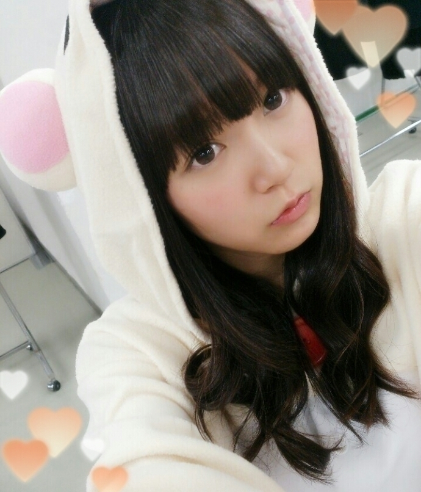
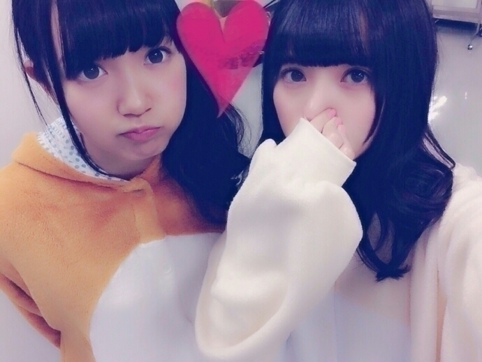
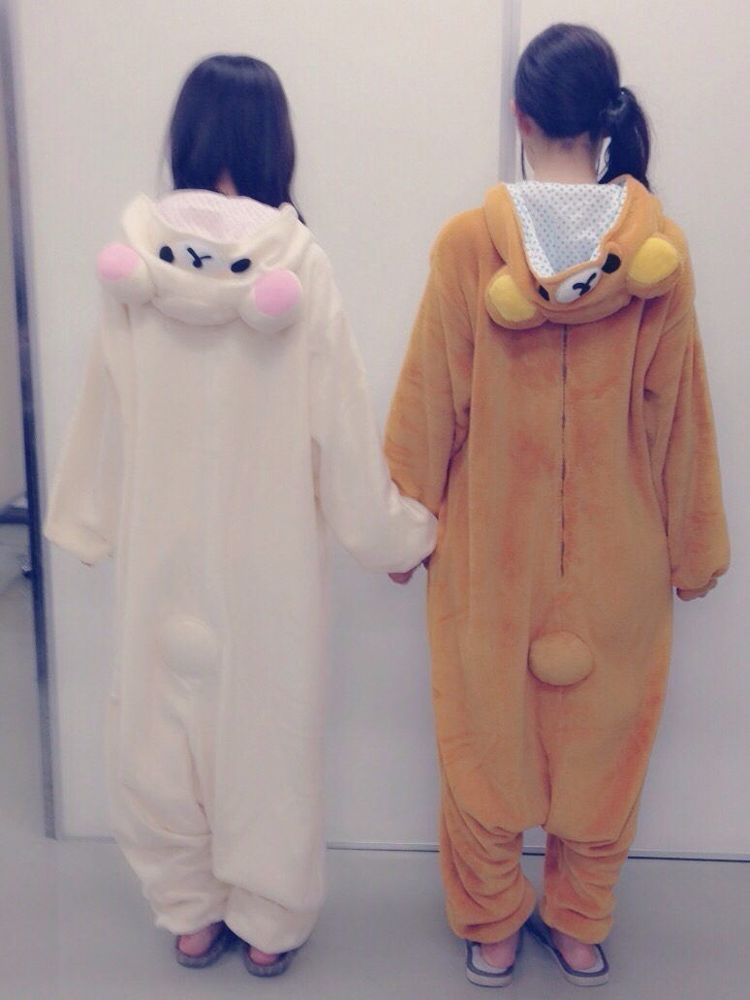
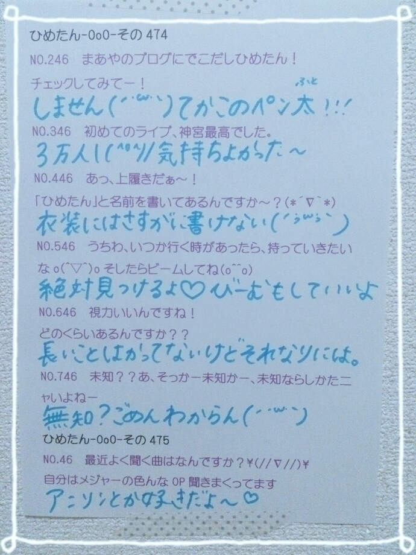

| 2014/11 24 Mon | ひめたん-OoO-その501 |
今日は幕張で
個別握手会でした\( ˆoˆ )/
来てくださったみなさん
ありがとうございました♡
お留守番ちーむのみなさん
レポするよ～
1部＊着ぐるみ × 下ろし巻き

2部＊着ぐるみ × 低めサイドポニー

(髪ボサボサ......ポーズ謎......。)
3部＊ニット × ハーフアップ
4部＊ニット × ツインテール

上下ともMINIMUM
着ぐるみは、格差社会コンビの
あすかりんとペア( ˇωˇ )
1部と2部の間に交換したんだよ～
実はちょっと前から
こーゆーのやりたいねって話してたので
今日実現してよかったです❁
3部と4部のお洋服はあれです
私服がダサいとNOGIBINGO!3で
言われてしまったので
セット売りしてたものを購入(笑)
マネキン買いしなさいとか
よく言われるの(´・ω・｀)
今日の握手会は
ちょっと久々だったよね～
番組の感想、イベントの感想、
雑誌の感想、アニメの話
他にもたくさん楽しいお話した( ^o^ )
NOGIBINGO!3のOLさんが
好評だったなあ～
あと昨日の乃木どこも
たくさんの方が観てくれて
びーむにやられたって( ^o^ )♡
あとライブの結果も
教えてくれてありがとう～
まだ応募できるので待ってるよ！
はじめましてのひとも
お久しぶりのひとも
みんな来てくれてありがとう(＊´v`＊)
ELOコーデもアンダーライブTシャツも
ピンクもツインテールも
あと名札も♡♡
関東では年内最後の握手会だったんだよね
みなさん良いお年を！
名古屋・京都に来てくれるひとは
ちょっと先になるけれど
お待ちしております～
そして昨日は
「沈黙の日曜日 in 富士急ハイランド」
公開生放送でした
FM FUJI 沈黙の金曜日チームの皆様
アルコ&ピースさん
ありがとうございました\( ˆoˆ )/
ゲストは乃木坂46と
WHITE JAMさんでした！
来てくれたみなさんも
聴いてくださったみなさんも
ありがとう♡
中には深夜から
並んでくださった方もいたと聞いて
寒い中よく頑張ったね(´；_；｀)
収録前後は
何かアトラクションとか
乗ったりしたのかな？
ライブパートでは
あの日 僕は咄嗟に嘘をついた
ガールズルール(橋本ポジ)
何度目の青空か？(橋本ポジ)
ガルルも何空も
アンダーライブと違うポジション！
トークパートも楽しかった(＊^ω^＊)
当日はお天気にも恵まれて
青空の下での収録
とっても気持ちよかったです
ひめたんびーむもできたし満足♪♪
UTB 発売されました！
オフショットや撮影エピソードは
次回の日記に書きます❁
みんなはもうチェックしてくれたかな？


 乃木坂メンバーは
乃木坂メンバーは
モンハンをよくやるけどポケモンとかは
メンバーはやるの？もう買った？教えて〜
ひめたんはゲームは持ってない( >_< )
機会があればゲットしたいな～
ゲーム好きさんおすすめ教えて！
あっ、広島の人っての
お好み焼き焼くのうまい？
我が家ではよく作っていたので
まあ他の県民さんよりも
経験値は上でしょうね(＊´ω`＊)
ひめたんにしかわからないことが
知りたいなあ...いっぱいあるか
うんいっぱいある♡♡
ひめたんの日記の
コメント欄下２ケタに46を踏んだ方へ
手書きでコメ返するコーナー
＼ ひめたん46 ／

いつもたくさんのコメント
ありがとうございます
前回で更新500回目を迎えまして
みなさんからお祝いのコメント
たくさん来ててびっくり(´；_；｀)♡
これからも番組の感想や
めーるの返信や、近況報告！
なんでも書いてくださいね～
前回の日記のコメント
質問をピックアップするのが
追い付かなくて
今回は少なめになってしまった
ごめんね(´・ω・｀)
次回の日記に残りのやつ
くっつけるつもりです！
乃木どこ、UTB、公開生放送など
感想もありがとう❁
(＊´・ω・＊)
コメント(775)
2014/11/24 23:36